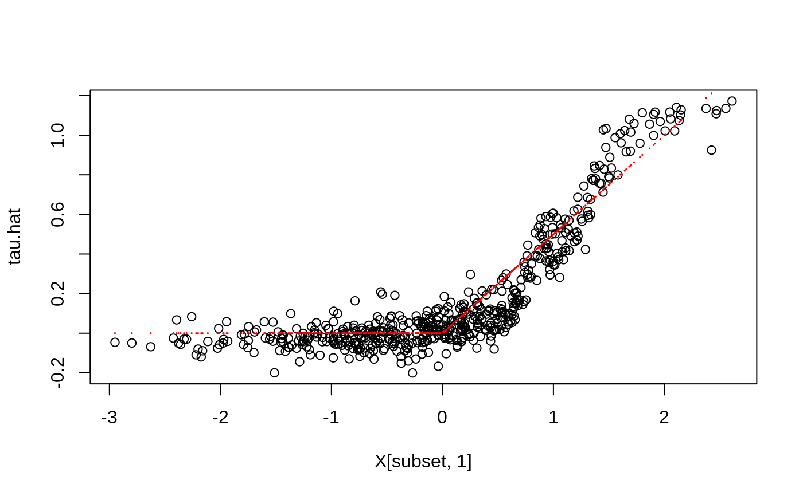

Gets estimates of \(h_k(x)\), k = 1..K in the conditionally linear model \(Y = c(x) + h_1(x)W_1 + ... + h_K(x)W_K\), for a target sample X = x.
# S3 method for lm_forest predict( object, newdata = NULL, num.threads = NULL, estimate.variance = FALSE, drop = FALSE, ... )
| object | The trained forest. |
|---|---|
| newdata | Points at which predictions should be made. If NULL, makes out-of-bag predictions on the training set instead (i.e., provides predictions at Xi using only trees that did not use the i-th training example). Note that this matrix should have the number of columns as the training matrix, and that the columns must appear in the same order. |
| num.threads | Number of threads used in training. If set to NULL, the software automatically selects an appropriate amount. |
| estimate.variance | Whether variance estimates for \(\hat h_k(x)\) are desired (for confidence intervals). This option is currently only supported for univariate outcomes Y. |
| drop | If TRUE, coerce the prediction result to the lowest possible dimension. Default is FALSE. |
| ... | Additional arguments (currently ignored). |
A list with elements `predictions`: a 3d array of dimension [num.samples, K, M] with predictions for regressor W, for each outcome 1,..,M (singleton dimensions in this array can be dropped by passing the `drop` argument to `[`, or with the shorthand `$predictions[,,]`), and optionally `variance.estimates`: a matrix with K columns with variance estimates.
# \donttest{ if (require("rdd", quietly = TRUE)) { # Train a LM Forest to estimate CATEs in a regression discontinuity design. # Simulate a simple example with a heterogeneous jump in the CEF. n <- 2000 p <- 5 X <- matrix(rnorm(n * p), n, p) Z <- runif(n, -4, 4) cutoff <- 0 W <- as.numeric(Z >= cutoff) tau <- pmax(0.5 * X[, 1], 0) Y <- tau * W + 1 / (1 + exp(2 * Z)) + 0.2 * rnorm(n) # Compute the Imbens-Kalyanaraman MSE-optimal bandwidth for a local linear regression. bandwidth <- IKbandwidth(Z, Y, cutoff) # Compute kernel weights for a triangular kernel. sample.weights <- kernelwts(Z, cutoff, bandwidth, "triangular") # Alternatively, specify bandwith and triangular kernel weights without using the `rdd` package. # bandwidth <- # user can hand-specify this. # dist <- abs((Z - cutoff) / bandwidth) # sample.weights <- (1 - dist) * (dist <= 1) / bandwidth # Estimate a local linear regression with the running variable Z conditional on covariates X = x: # Y = c(x) + tau(x) W + b(x) Z. # Specify gradient.weights = c(1, 0) to target heterogeneity in the RDD coefficient tau(x). # Also, fit forest on subset with non-zero weights for faster estimation. subset <- sample.weights > 0 lmf <- lm_forest(X[subset, ], Y[subset], cbind(W, Z)[subset, ], sample.weights = sample.weights[subset], gradient.weights = c(1, 0)) tau.hat <- predict(lmf)$predictions[, 1, ] # Plot estimated tau(x) vs simulated ground truth. plot(X[subset, 1], tau.hat) points(X[subset, 1], tau[subset], col = "red", cex = 0.1) }# }